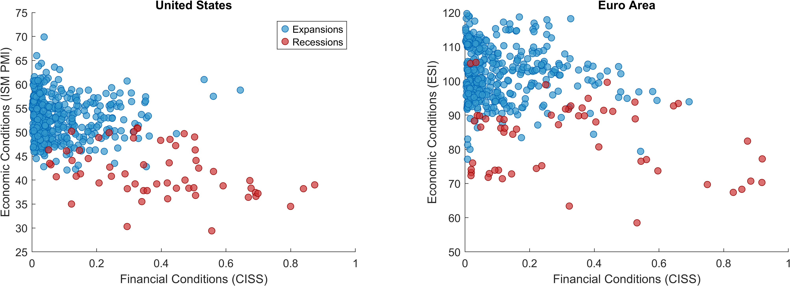
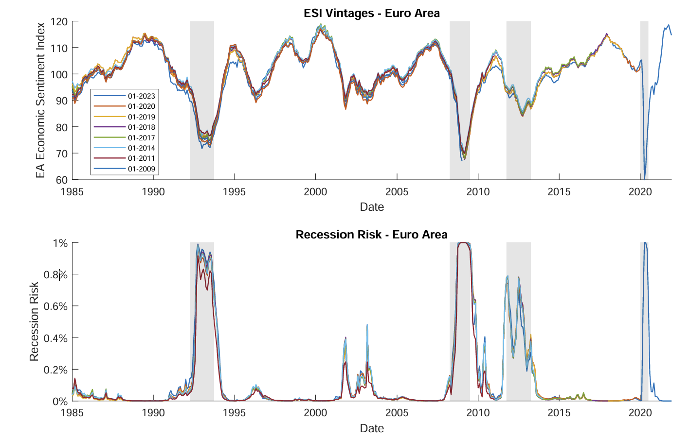

Latest: --
Previous: --
Last Updated:--
Next Update:--
Processing data...
Frequently Asked Questions
Q: What is the goal of the recession risk nowcast?
A: Timely knowledge of whether the economy is experiencing a broad-based decline in economic activity is a key input to a variety of decision-making processes. Furno and Giannone (2024) show that recessions are characterized by the joint occurrence of soft economic data and tight financial conditions: the recession risk nowcast leverages this insight to produce timely and reliable estimates of the probability that the economy is undergoing a recession. The nowcast is available the first business day after the reference month closes, and is as accurate as professional forecasters at identifying expansions versus contractions in real-time.
Q: What is the schedule for reporting and updating the recession risk estimates?
A: The recession risk nowcast estimates the probability that the economy is in recession in the current month. For example, a 25% recession risk for November means there is a 25% chance the economy is in recession in November. These estimates are available on the first business day after the reference month closes. For example, recession risk for November becomes available on the first business day of December. This is possible because the model uses timely indicators: the ISM PMI Manufacturing (released at the beginning of the next month), the Economic Sentiment Indicator (released at month-end), and the CISS financial stress index (available daily).
Q: What data does the model use?
A: The model combines macroeconomic and financial conditions specific to each region or country. For the US, it uses the ISM PMI Manufacturing and the Composite Indicator of Systemic Stress (CISS). The ISM PMI Manufacturing is a monthly diffusion index based on surveys of purchasing managers at manufacturing companies, measuring key business conditions like new orders, production, and employment. For the euro area, the model uses the Economic Sentiment Indicator (ESI) and the CISS. The ESI captures real economic activity through surveys across industry (40%), services (30%), consumers (20%), retail (5%), and construction (5%). The CISS measures financial market stress across five key segments: bonds, equities, money markets, foreign exchange, and financial intermediaries, using a methodology that accounts for cross-market correlations.
Q: Why do you include financial conditions alongside economic indicators?
A: Financial conditions provide crucial complementary information about the current state of the economy. Furno and Giannone (2024) show that financial stress often signals economic distress in real-time, sometimes before it shows up in traditional economic data. For instance, the model picked up high recession risk in late 2008 during the Lehman Brothers bankruptcy, which was later confirmed as part of the Great Recession. This is also consistent with the role played by financial conditions in Growth-at-Risk estimates, as shown by Adrian, Boyarchenko, and Giannone (2019).

The chart above illustrates this relationship for the United States and euro area, showing how recessions (blue dots) are characterized by both weak economic activity and elevated financial stress, while expansions (orange dots) show the opposite pattern. The minimal overlap between the two distributions demonstrates why examining both indicators together improves recession detection.
Q: How are recessions measured?
A: Official recession dates are determined by national business cycle dating committees: the NBER (National Bureau of Economic Research) for the US, and the CEPR (Centre for Economic Policy Research) for the euro area. These committees identify periods of "significant decline in economic activity that is spread across the economy and lasts more than a few months". These official recession dates are represented on the dashboard as shaded vertical bands.
Q: What is the current modeling strategy?
A: The recession risk nowcast uses a Bayesian logit model that combines one macroeconomic indicator and one financial indicator for each country or region. For the US, the model uses the ISM PMI Manufacturing (macroeconomic) and the Composite Indicator of Systemic Stress or CISS (financial). For the euro area, it uses the Economic Sentiment Indicator or ESI (macroeconomic) paired with the CISS (financial). The model estimates the probability that the economy is currently in recession by projecting official recession dates onto these two predictors. The Bayesian framework naturally incorporates parameter uncertainty, providing not just point estimates but also confidence intervals around the recession probability.
Q: What is the estimation sample?
A: The recession risk estimates use data starting from different periods for each region/country: 1980:m1 for the US, and 1985:m1 for the euro area. The "latest" estimates run through the latest available month. The "real-time" estimates, instead, are produced with a pseudo out-of-sample expanding window approach, to highlight the model's stability over time and its accuracy in real-time conditions. Importantly, a 24-month estimation delay is applied in both cases to account for the inherent uncertainty in classifying periods as recessions or expansions in real-time, since official recession announcements typically come with significant delays.
Q: How accurate is the model compared to other approaches?
A: The model demonstrates strong accuracy in identifying both recessions and expansions. When benchmarked against the Survey of Professional Forecasters for the US, the nowcast shows similar ability to identify economic downturns but is more accurate at correctly identifying periods of expansion - meaning it produces fewer false alarms during normal economic times.
The nowcast also compares favorably to popular unemployment-based recession indicators, such as the Sahm Rule, which signals a recession when the three-month average unemployment rate rises 0.5 percentage points above its 12-month low. While both approaches accurately identify the beginning of recessions, with the recession risk nowcast being slightly more timely, the nowcast proves more useful at detecting the end of recessions and the beginning of recoveries. This advantage likely stems from the fact that unemployment is a lagging indicator that tends to improve only after economic recovery is already underway, whereas the financial and survey-based indicators can capture turning points more quickly.
Q: Are these estimates revised, and how reliable are they in real-time?
A: The estimates are subject to minimal revisions because the underlying data sources are timely and stable. The CISS uses financial market prices (which are not revised), and the PMI/ESI surveys have only minor seasonal adjustments. Tests using real-time data vintages are available in Furno and Giannone (2024) and confirm high stability over time. The correlation between initial estimates and final estimates is 0.99 for the US and 0.98 for the euro area, confirming their reliability for real-time decision making.

The chart above highlights the stability of the recession risk estimates across vintages of the Economic Sentiment Indicator (ESI) for the euro area.
Q: Can users obtain the data underlying this analysis?
A: Yes, the recession risk estimates can be downloaded directly from this website using the "Data" button in the dashboard. The downloaded files contain the time series of recession probabilities (median, 5th and 95th percentiles) for your selected countries and estimation method.
The underlying input data has mixed availability: the Composite Indicator of Systemic Stress (CISS) is freely available from the ECB, and the Economic Sentiment Indicator is available from the European Commission. However, the ISM PMI Manufacturing data requires a subscription. For researchers, a complete replication package including code and documentation is available on GitHub.
Q: What do people say about the nowcast?
A: The recession risk nowcast has received coverage from Bloomberg (here and here), which has also extended the methodology to additional countries. More recently, it was featured by Menzie Chinn in this Econbrowser post as part of the discussion on the state of the economy following April 2025's tariff announcements.
Q: How should I cite this work?
A: Furno, F., & Giannone, D. (2024). Nowcasting recession risk. Handbook of Research Methods and Applications in Macroeconomic Forecasting, 156-186. Link here.